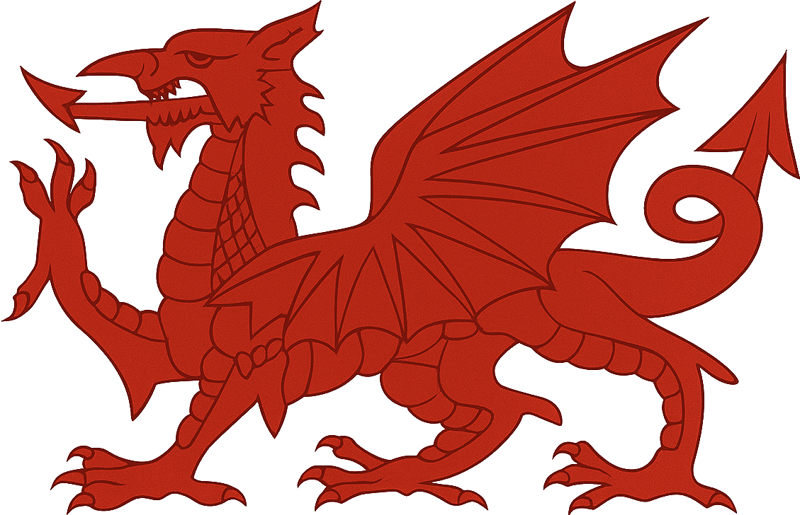

COMEÇAR
CORAÇÃO
DO DRAGÃO
DESCUBRA O PAÍS DE GALES
uma nação celta constituinte do Reino Unido, localizada no oeste da Inglaterra. Com mais de 600 castelos medievais, é famoso por suas paisagens costeiras e montanhosas. O país mantém uma forte identidade cultural, simbolizada pelo icônico Dragão Vermelho, sendo Cardiff sua capital.